Teuco Corner Whirlpool Shower Integrates Shower With Bathtub
Fri, 25 Nov 2011 17:12:16 +0000
This will definitely give your bathroom a different look. Wondering what we are talking about? This is about a cool Corner Whirlpool shower designed by Teuco. With the comfort of a bathtub, this shower will offer you and your family a convenient bath for sure....
This will definitely give your bathroom a different look. Wondering what we are talking about? This is about a cool Corner Whirlpool shower designed by Teuco. With the comfort of a bathtub, this shower will offer you and your family a convenient bath for sure. This shower blends the functions of a bathtub and a shower in a perfect manner. The new shower combines both the luxury and comfort which will satisfy both the elders and the children. The model comprises a basic whirlpool or hydrosilence option that will reduce voice up to 70% and avoids vibration. The noise is much reduced such that you can only hear the silent flow of water which will make yourself feel cool and calm.
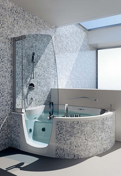
The new shower comes with a stunning furniture finish. You can get it in a wide variety of limed oak panels, anthracite oak panels and wedge panels with an oval shape customizable. It has an 8 mm tempered glass full-height door with a width of more than 90 cm. The shower-cum-bathtub has an easy way to get in or to get out. This product is designed in an ergonomic way so as to use it easily, simply and safely. Just go for the new shower and make your bathroom more comfortable!
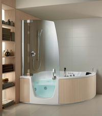
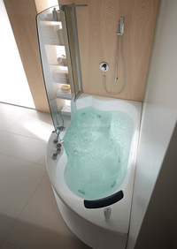
Amazing Red Stair and Vent Sculpture in the Middle ofMelbourne
Fri, 25 Nov 2011 16:04:12 +0000
Two urban projects – Red Stair and Vent Sculpture – have been designed by Marcus O’Reilly Architects in the heart of the Australian city of Melbourne. It is designed as a major public meeting space and as a recreation area for the public. Both the...
Two urban projects – Red Stair and Vent Sculpture – have been designed by Marcus O’Reilly Architects in the heart of the Australian city of Melbourne. It is designed as a major public meeting space and as a recreation area for the public. Both the projects are located along the Southbank Promenade near theYarraRiver. TheQueensbridge Square, which is a major public meeting place, connects the Southgate with Southbank Boulevard,Queensbridge Street, the casino, theFreshwater Placeapartment tower and theSandridgeBridge. This place leads to the Flinders Street Station along with its underpass. The new Red Stair acts as a guide-spot that leads to the above mentioned places. It is very easily accessible for the public for their casual or formal meetings, sitting in the sun, demonstrations and other recreational activities.
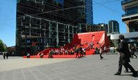
The material used for Red Stair is plywood. It is red painted and given cool LED backlights. The glowing Red Stair at night is really a stunning view! The high back-wall of the Red Stair blocks the roadway giving way to the underpass and it functions as an end-mark to theQueensbridge Squareenclosing the urban space. The second structure, the vent, was built across the square. The vent has a perfect design that transforms public life into an active form creating a cool space to relax. The design work of the project was led by Prof. Rob Adams for the City ofMelbourne. The project was credible enough that it won the precious Melbourne Prize and AIA Urban Design Award. The project itself is an ideal tool that interconnects the busy public along with relaxation and recreation.
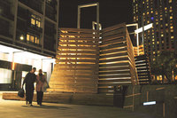
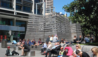
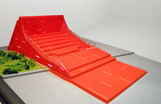
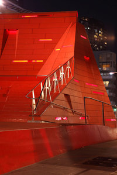

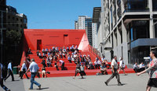
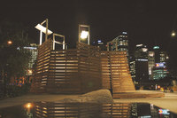
DOOlight Drop Light is Rechargeable and Perfect for Your Home or Office
Thu, 24 Nov 2011 16:05:28 +0000
Check out DOOlight’s new concept in lighting here. Te company’s Drop Light is designed to change the mood of your home décor in a unique manner. The new lamp has a different and appealing shape that will make your perfect home’s interior look better. Drop...
Check out DOOlight’s new concept in lighting here. Te company’s Drop Light is designed to change the mood of your home décor in a unique manner. The new lamp has a different and appealing shape that will make your perfect home’s interior look better. Drop Light by DOOlight comes about as wireless and rechargeable. It comes with rechargeable lighting units named ‘drops’. Light-weighted and handy, the drops can be placed anywhere you want.
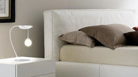
All you need to do is to recharge the lamp and use in case of a power failure. If you are in need of a stronger lighting you can use them placed together on a support. Confused as to how to handle it? You just have to touch simply on the edge of the hanger if you have to turn on or switch off the lamp. If you want to increase or decrease the intensity of the light, you have to hold the edge of the hanger for a second or two. Then your perfect lighting is done. Obviously, the Drop Light is perfect for your home interior and is suitable for every part of your home or office. Want one?
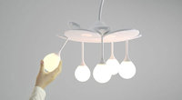
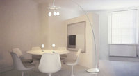
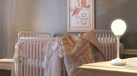
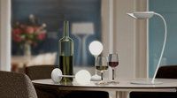
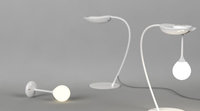
Listen to the Rain and the Birds While at the Base Camp Chewton Residence
Thu, 24 Nov 2011 14:41:01 +0000
Welcome to the BaseCampChewton Residence. The project, a multi-functional, compact home, has been designed by Melbourne-based Insite Design at Central Victoria inAustralia. The landscape plays an important role in the unique design of the house. Se t amidst rolling hills, eucalyptus forests and rocky outcrops,...
Welcome to the BaseCampChewton Residence. The project, a multi-functional, compact home, has been designed by Melbourne-based Insite Design at Central Victoria inAustralia. The landscape plays an important role in the unique design of the house. Se t amidst rolling hills, eucalyptus forests and rocky outcrops, the residence sports an elongated structure that provides maximum solar control. The residence is mainly wooden floored with a flat elongated roof. Built on a high-level bush fire zone, the construction is said to have called for materials that required low combustibility and windows with stainless steel mesh screens. The residence has all its doors and other openings smoke-sealed. To assure safety from ember attack, the part under the building has been mesh screened.

The interior of the residence has been designed in such a way that it provides wide views of the beauty of the nature. The solid walls of the building has close up landscape porthole punctuations. These provisions make the residents able to enjoy the panoramic views of the nature at different times of the day and during the seasonal and climatic changes. Borrowing the architects’ words, the Base Camp Chewton Residence is ‘a space to hear the rain on the roof, birds on trees and to see stars at night’. You can stay at this unique building by spending around 250 Australian Dollars for a night.
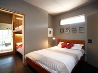
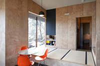
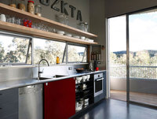
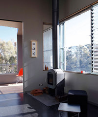
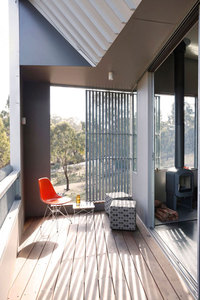
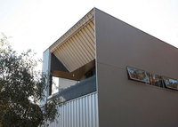
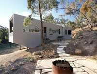
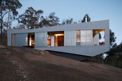
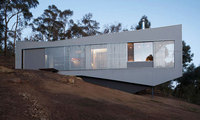
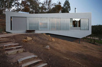
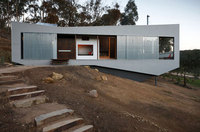
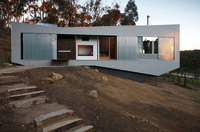

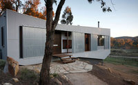
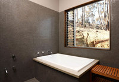
Loft in The Attic, in Prague
Wed, 23 Nov 2011 20:41:13 +0000
A1 Architects have designed a gorgeous contemporary loft that will surprise you due to its “boundless” space. Located in Prague this house represented a new challenge for the architects because it concerned a larger place than the ones they were used to work on before....
A1 Architects have designed a gorgeous contemporary loft that will surprise you due to its “boundless” space. Located in Prague this house represented a new challenge for the architects because it concerned a larger place than the ones they were used to work on before.
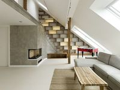
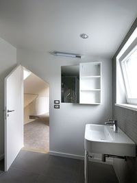
The Rounded House was a project that required a lot of thought about the fluency of space. In order to achieve their goal, the architects designed the common activities rooms connected with one fluent space, but, of course, the bedrooms are separated. They started with rounding some of the interior corners that gave the rooms an unique smooth feel.
Furthermore the staircase, with integrated fireplace and library, climbs up the rounded corner. Another important aspect was the materials which had to be natural. The furnishings throughout the entire house are modern, some are custom made and, as you can see, they used a lot of wood. Everything blends in so that “boundaries of walls somehow disappear”. The loft houses a living room, kitchen, dining area, an elevated gallery, a study, library and three bedrooms.
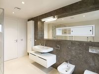
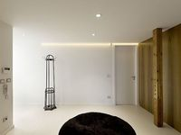
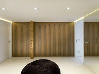
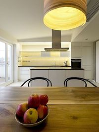
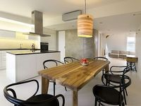

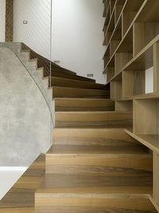
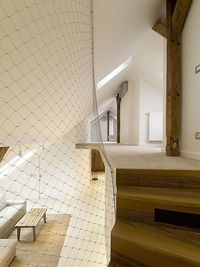
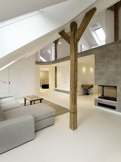
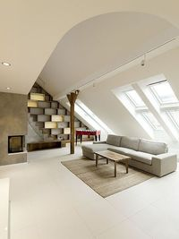
This amazing house is a sleek, hip place and a warm and welcoming place to land. It has the perfect balance and is a chic urban loft.
Images from Homedit
Small House is Small but Spacious
Fri, 25 Nov 2011 16:32:59 +0000
The Small House is perfectly small, but really spacious. Built in 2010 by Domenic Alvaro, the Principal of the Woods Bagot Sydney Studio, for himself, the residence is located in Surry Hills atNew South WalesinAustralia. The small House is unique and exceptional in its architecture....
The Small House is perfectly small, but really spacious. Built in 2010 by Domenic Alvaro, the Principal of the Woods Bagot Sydney Studio, for himself, the residence is located in Surry Hills atNew South WalesinAustralia. The small House is unique and exceptional in its architecture. You can find that the designer has spent much of his time and brains to make the house perfect in every way. Within a small space, Alvaro has designed the house in a ultimately spacious manner. The designer chose prefabricated concrete for the building material, because it can be molded offsite and can be assembled onsite in a short time. The Small House has its focus on the kitchen as many other traditional homes. The house has a vertical alignment and has four levels. The ground floor consists of storage space and parking area.
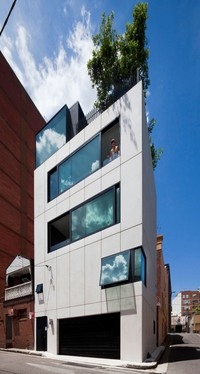
The first floor and the second floor contain bedrooms, bathrooms, storage area and living areas. The third floor has kitchen and recreation area. There is a top garden terrace and all the levels are connected through staircases. This perfect home has been lauded with many awards, including the World House of the Year at the 2011 World Architectural Festival. The appreciable architecture with modern interior is the striking feature of the Small House. Obviously, the Small House is small, but pretty ‘Big’!
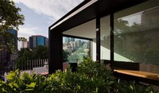
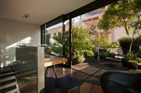
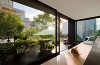
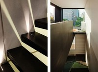
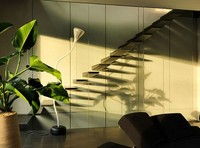
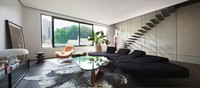
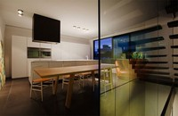
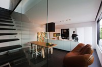
Crashed Ferrari Adds Charm to Home Decor inside a Coffee Table
Fri, 25 Nov 2011 15:31:33 +0000
This is the story of a Ferrari that added to the beauty of home decor! And it is a very rare story too! A precious Ferrari inside a coffee table! Don’t wonder! A crashed mind blowing Ferrari became a part of the home decor as...
This is the story of a Ferrari that added to the beauty of home decor! And it is a very rare story too! A precious Ferrari inside a coffee table! Don’t wonder! A crashed mind blowing Ferrari became a part of the home decor as a decorative item inside a coffee table!
The rare idea of making such a ‘Ferrari’ coffee table came from Charly Molinelli from Molinelli Designs. It is an innovative idea, but the sight of this coffee table is really a disturbance for the Ferrari lovers! You will definitely get amazed by the scene of the precious Ferrari remaining inside a coffee table and that adds to the ambience. Every one who sees the table will be amazed of its concept and truly will feel pathetic about the cute Ferrari. Some may think that this is an honor given for Ferrari. Though it is in pieces, it is the best place a crushed Ferrari could ever get! It is a sad, but amazing visual to find the Ferrari logo on top of the crushed car. The crushed number plate adds to this pathetic view.
Charly’s new idea may raise a flash on other designers’ minds too. It is a different and wonderful concept that adds to a perfect home decor.
Doimo ‘Miss Wool’ Tailor Made for the Winter
Thu, 24 Nov 2011 15:19:37 +0000
Doimo Decor, has unwrapped a new innovative idea in lampshades. The company has hit the market with a new Wool Lampshade Lamp, named Miss Wool. Doimo has come up with their products that offer a taste of living with rich emotions and details. The Miss...
Doimo Decor, has unwrapped a new innovative idea in lampshades. The company has hit the market with a new Wool Lampshade Lamp, named Miss Wool. Doimo has come up with their products that offer a taste of living with rich emotions and details. The Miss Wool collection is part of Doimo Decor’s Seasons 4 Collection, which boasts four mini sub-collections with products for home decor matching every season of this year. This winter sub-collection consists of knitted products and has an outer woollen covering that can be removed and washed conveniently. Miss Wool has a charming little bow that makes the lamp elegant.
If you are planning to add Miss Wool to your home decor, we are sure it will definitely bring in the beauty and elegance to your home’s ambience. You can also reach out to other products of the exquisite Winter collection of Doimo Decor here.
Kitchen Storage Ideas: Organize Drawers & Pullout Pantries
Wed, 23 Nov 2011 21:14:20 +0000
Storage of utensils and other stuff always create headaches in the kitchen area. You have always wanted maximum storage possibilities in the available limited space of your kitchen, right? Don’t worry! Here are some new ideas to make maximum use out of your kitchen space!...
Storage of utensils and other stuff always create headaches in the kitchen area. You have always wanted maximum storage possibilities in the available limited space of your kitchen, right? Don’t worry! Here are some new ideas to make maximum use out of your kitchen space!
You can keep a pull-out adjacent to the cook top that can store cooking staples close to hand. You can keep all your pantry stuff in the pullouts between ovens and the dish storage boasts wire shelves. Adjacent to the back door of the kitchen, you can provide a recycling pullout that can be used to store newspapers and used plastic bottles. You can also make a pullout storage with a walk-up pantry unit.

Try a deep drawer under the cooktop to help you keep large pots, while a three-tier pullout under the cooktop can be used to store small pots and jars. A hiding shelf can be made attached to an ordinary drawer which can be pressed and made apart from the drawer to keep spice jars. You can arrange pantry items in a wasted toe-kick space. You can also divide drawers into several parts and can keep pots or pans.
You can also opt for furniture-style storage. A bread drawer with a ventilated lid can make bread loaf fresh and safe. And if you think it suits your kitchens design, you can also make tall, narrow pullouts to keep platters.
Apply your own logic to make different kind of pull-outs to store the things in your kitchen. You can rely on aftermarket products and can modify the stock cabinetry.
Luxury For the Bedroom Made Easy
Wed, 23 Nov 2011 20:11:25 +0000
Adding some luxury to the bedroom doesn’t have to be a daunting task. It can be done quite easily and doesn’t have to break the bank either. Don’t believe me? We have a few design tips for you. 1. Create a cosy nest for your...
Adding some luxury to the bedroom doesn’t have to be a daunting task. It can be done quite easily and doesn’t have to break the bank either. Don’t believe me? We have a few design tips for you.
1. Create a cosy nest for your bed. Spend a little extra on the bedding. This means a new and large mattress or a mattress topper to add extra softness, sheets with the highest thread count you can get your hands and budget on, and lots and lots of pillows. Big, fluffy ones would be best, so you can just fall into bed and leave the world behind.
2. Area Rugs are great for enhancing the room’s character, as you can choose different styles and colours. Again, go for soft ones. Your feet will thank you for it every morning. Choose soothing colours, which will get you in the relaxed mood, and if you have carpeting you could, alternatively, have a new high-pile carpet installed.
3. Accessorize. You’ve already started accessorizing with the pillows, but what about the walls. Mirrors are great and interesting features, and also make the room seem lighter as well as bigger. Hang up some art you enjoy. No, not an original Monet! Buy prints of art you enjoy, or if you have a creative friend ask them to make you some originals. What you choose should underline the general theme of your décor and they add sophistication and elegance to the bedroom. They will help you relax, too, which is why you should pick what you really like.
4. Beware lighting. It is the most important factor of setting the luxurious scene. A collection of small table lamps and floor lamps are better than one ceiling light. Their glow is softer and more homely. Equally capable of spoiling the atmosphere is natural light or light from street lamps. The solution is vertical blinds. They are available in several colours and designs, so you can match them with the room, and they give you the control over how light or dark you want it to be. If you want a more modern flair, then have a look at bamboo vertical blinds. Their design is modern and elegant.
If you follow these tips and adapt them to your budget, you’ll have a luxurious bedroom in no time. The main point to remember from these tips is that you should be comfortable and relaxed in your bedroom. Happy designing.